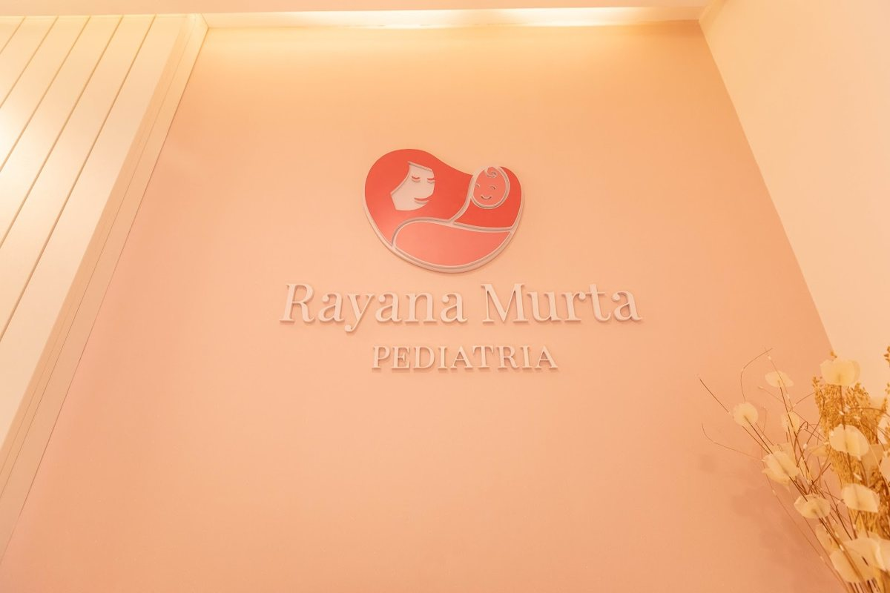
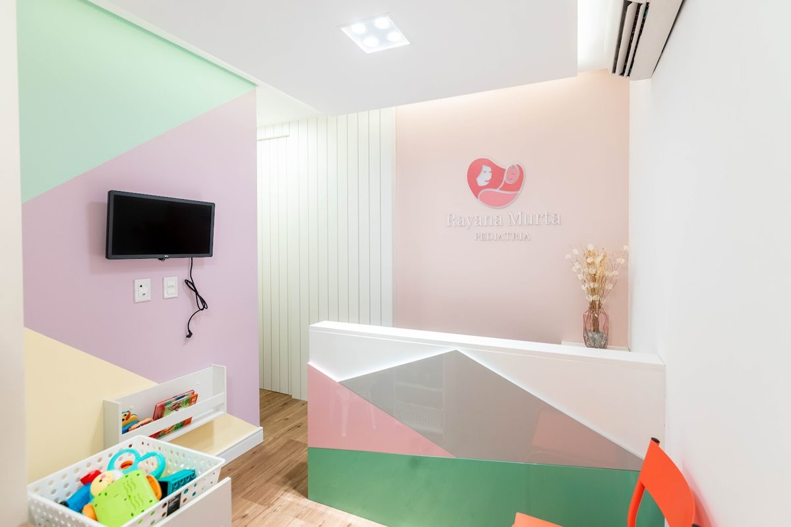
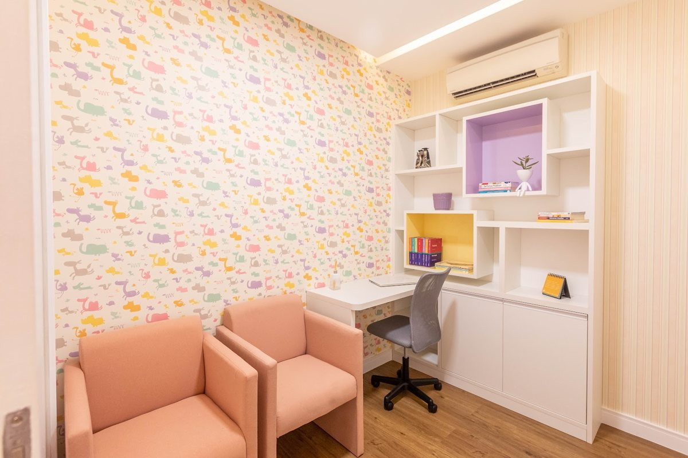
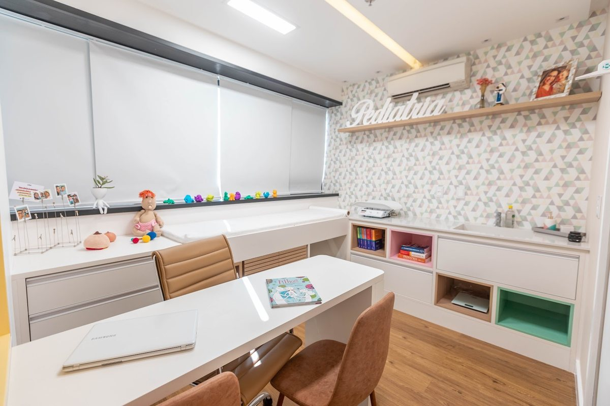

Pediatra · CRM-BA 23601 · RQE 16127
Dra. Rayana Murta
Pediatria do pré-natal ao primeiro ano — e nas fases que vêm depois.
Consulta pré-natal pediátrica, puericultura, amamentação, sono do bebê, vacinas e check-up. Consultório próprio no Wall Street Empresarial, na Paralela, em Salvador.
★★★★★4,8 no Google · 38 avaliações na ficha do consultórioCuidando de famílias com leveza e amor.Bio da Dra. Rayana no Instagram
Por onde começar
O que está na sua cabeça agora?
Escolha um assunto e leia com calma. Cada página explica, em linguagem simples, o que costuma ser conversado na consulta. A indicação é individual, definida em consulta.
O bebê ainda vai chegar
Conhecer a pediatra e tirar as dúvidas antes do parto.
Consulta pré-natalMamadasEstou começando a amamentar
Pega, ritmo das mamadas e quando pedir ajuda.
AmamentaçãoNoitesAs noites estão difíceis
Sono seguro, rotina e sinais de cansaço.
Sono do bebêRotinaQuero acompanhar o crescimento
Consultas de rotina e o tempo de cada fase.
PuericulturaTambém: Vacinação e check-upSobre a Dra. RayanaConsultório e agendamento
Do pré-natal ao primeiro ano
Uma pediatra em cada etapa.
O primeiro ano muda muito em pouco tempo. Este é o caminho que a pediatria costuma percorrer com a família — com o que a Dra. Rayana divulga em cada etapa. O calendário de consultas de cada bebê é combinado em consulta.
- 1Na gestação
Consulta pré-natal pediátrica
Uma conversa com a pediatra antes do parto, em geral no último trimestre: amamentação, primeiros cuidados, sono seguro e os testes do recém-nascido.
Destaque “Pré-Natal” no Instagram delaSaiba mais - 2Primeiras semanas
A primeira consulta do bebê
Costuma acontecer na primeira semana de vida: peso, mamadas, icterícia, coto umbilical e a conferência dos testes de triagem.
Ela se apresenta como “Consultora em amamentação”Saiba mais - 3Mês a mês
Puericultura
Consultas de rotina, em geral mensais nos primeiros meses: crescimento, desenvolvimento, vacinas e as dúvidas de cada fase.
“Cada criança tem um tempo que merece ser respeitado.”Saiba mais - 4Por volta dos 6 meses
Introdução alimentar e sono
Começam outros alimentos, mantendo o leite materno, e o sono vai ganhando ritmo. O momento e o jeito são combinados em consulta.
Destaques “Sono” e “Amamentação” no InstagramSaiba mais
E depois do primeiro ano? Oi, papais! Como está o check-up do segundo semestre do seu filho?
— post da Dra. Rayana, agosto de 2026. Veja vacinação e check-up.
E-book da Dra. Rayana
Significando os “choros” do bebê.
Nos primeiros meses, o choro é a forma que o bebê tem de pedir. No e-book publicado pela PetitCor, a Dra. Rayana escreve para as famílias sobre o que ele pode estar dizendo.
Ler o e-book na PetitCor ↗“Para as mamães de primeira viagem, um desabafo: nos primeiros meses, não há nada mais desesperador do que ver o bebê chorar e não saber o porquê.”
“Como os sentidos e a oralidade não estão apurados o suficiente, o choro é a única ferramenta de comunicação das necessidades do pequeno.”
“Cansaço: quando a ‘bateria fraca’ alerta, o bebê perde o interesse nos brinquedos e nas pessoas. Geralmente boceja e esfrega os olhos […]”
Trechos do e-book “Significando os ‘choros’ do bebê”, Dra. Rayana Pastor Murta
Trajetória
Da saúde da família à sala 818B.
As datas vêm do CNES, o cadastro nacional dos estabelecimentos de saúde, da Receita Federal e dos canais da própria Dra. Rayana.
- 2011–2012Saúde da família
Médica da Estratégia Saúde da Família em Várzea da Roça, no interior da Bahia.
CNES - 2015Pediatra
Registro como médica pediatra no CNES, o cadastro nacional dos estabelecimentos de saúde.
CNES · RQE 16127 - 2015–2026Hospital Santo Antônio
Pediatra nas Obras Sociais Irmã Dulce, em Salvador, até março de 2026.
CNES - 2020Consultório próprio
Abre a empresa do consultório, hoje na sala 818 do Wall Street Empresarial.
Receita Federal - 2021Na rádio
Entrevista no programa “Isso é Bahia!”, da A Tarde FM, sobre a saúde emocional das crianças.
YouTube - HojeRayana Murta Pediatria
Puericultura, consulta pré-natal, amamentação e sono, com conteúdo para pais no Instagram.
Instagram · Linktree
Nas palavras dela
Cada criança tem o seu tempo.
Nem todo desenvolvimento precisa ser apressado. Cada criança tem um tempo que merece ser respeitado.
Instagram, setembro de 2026Lembre-se, essas fases passam, e cada uma delas traz uma nova habilidade incrível.
Instagram, sobre o salto de desenvolvimento de 1 mêsO sarampo é muito mais contagioso do que muita gente imagina
Instagram, agosto de 2026
No Google
Explicar com detalhe, acolher com calma.
me explicou tudo nos mínimos detalhes . Me deixou super tranquila e esteve comigo desde primeiro momento !
Obrigada por confiar em mim para cuidar do seu bem mais precioso! Beijo.
Para ler e ouvir
Conteúdo para pais e mães.
O e-book, a entrevista na rádio e os canais em que a Dra. Rayana conversa com as famílias.
O que o choro pode estar dizendo nos primeiros meses, assinado pela Dra. Rayana.
Ler o e-book ↗Rádio A Tarde FM · 04/08/2021Saúde emocional das criançasEntrevista no programa “Isso é Bahia!”, divulgada por ela no Linktree.
Assistir no YouTube ↗Instagram · @rayanamurtapedDicas para paisDesenvolvimento, sono, amamentação, vacinas e check-up, com a agenda do consultório.
Abrir o Instagram ↗LinktreeAgenda e localizaçãoOs atalhos dela: agendar, avaliar o atendimento, localização e a entrevista.
Abrir o Linktree ↗O consultório
Um espaço em tons de pastel.
A recepção, a sala de espera e o consultório da Rayana Murta Pediatria, nas fotos publicadas na ficha do Google. A ficha também marca o consultório como espaço que acolhe a comunidade LGBTQ+.




Onde atendo
Paralela, Salvador.
Wall Street Empresarial
Av. Luís Viana Filho, 6462 · Torre B, sala 818B
Paralela · Salvador – BA · CEP 41730-101
Horário de atendimento
Horário publicado na ficha do Google. Atendimento com hora marcada — confirme pelo WhatsApp.
Bebê com dificuldade para respirar, febre em bebê com menos de 3 meses, moleza intensa, manchas roxas sem motivo ou palidez súbita: procure o pronto-socorro mais próximo ou ligue para o SAMU (192). O WhatsApp do consultório não é canal de urgência.
Dúvidas frequentes
Perguntas dos pais
Onde fica o consultório?
No Wall Street Empresarial: Av. Luís Viana Filho, 6462, Torre B, sala 818B, na Paralela, em Salvador. Veja o mapa e como chegar.
Como agendar?
Pelo WhatsApp (71) 99999-6010, o mesmo do botão “Agende uma consulta!” do Linktree da Dra. Rayana. A consulta é com hora marcada.
Quando fazer a consulta pré-natal com a pediatra?
Em geral no último trimestre da gestação, com calma para conversar sobre amamentação, primeiros cuidados e a primeira consulta do bebê. Veja a página consulta pré-natal pediátrica.
Atende plano de saúde?
Não confirmamos os convênios. Pergunte pelo WhatsApp ao agendar.
O que levar na consulta?
A caderneta da criança, exames e receitas recentes e uma lista com as suas dúvidas. Na consulta pré-natal, os exames da gestação ajudam.
E numa urgência?
Procure o pronto-socorro mais próximo ou ligue para o SAMU (192). O WhatsApp do consultório serve para agendar e não é canal de urgência.
Agende
Uma consulta com calma, para cuidar junto com você.
Consulta com hora marcada no consultório da Dra. Rayana: Wall Street Empresarial, Torre B, sala 818B, na Paralela. Fale pelo WhatsApp (71) 99999-6010.